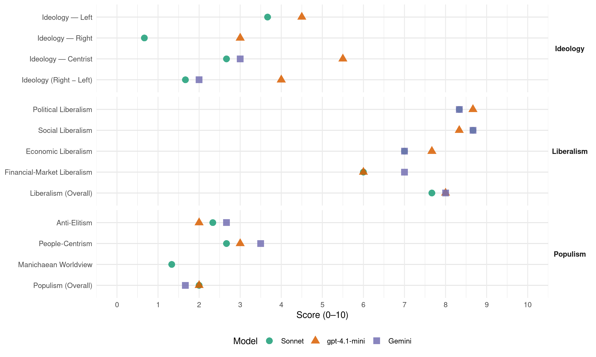

D’66 (Netherlands, 1989)
manifesto_id 22330_198909
Get full text: This site shows derived annotations and short verbatim quotes only. The full manifesto text is © Manifesto Project / WZB — obtain it via manifesto-project.wzb.eu using the manifesto_id above.
Headline scores
| Dimension | Sonnet | gpt-4.1-mini | Gemini |
|---|---|---|---|
| Populism (Overall) | 2.0 | 2.0 | 1.7 |
| Anti-Elitism | 2.3 | 2.0 | 2.7 |
| People-Centrism | 2.7 | 3.0 | 3.5 |
| Manichaean Worldview | 1.3 | – | – |
| Ideology (Right − Left) | 1.7 | 4.0 | 2.0 |
| Liberalism (Overall) | 7.7 | 8.0 | 8.0 |
| Political Liberalism | 8.3 | 8.7 | 8.3 |
| Social Liberalism | 8.7 | 8.3 | 8.7 |
| Economic Liberalism | 7.0 | 7.7 | 7.0 |
| Financial-Market Liberalism | 6.0 | 6.0 | 7.0 |
Evidence per dimension
Economic Liberalism
Gemini · score 7.0 · verified · chunk 1
“deregulering van bouwvoorschriften”
bevorderen van zelfwerkzaamheid en door deregulering van bouwvoorschriften. INDIVIDUELE WENSEN
Gemini · score 7.0 · verified · chunk 2
“een levendige vrije markt voor cultuurgoederen met gretige afnemers”
Een levendige vrije markt voor cultuurgoederen met gretige afnemers en eventueel sponsors is de beste grondslag voor een bloeiende kunst.
Gemini · score 7.0 · verified · chunk 3
“introductie van het marktmechanisme”
De economische hervormingen met de introductie van het marktmechanisme en de politieke hervormingen in de richting
gpt-4.1-mini · score 8.0 · verified · chunk 1
“Duurzame ontwikkeling betekent dat het milieubeleid imperatief is en, anders dan andere beleidsvelden, geen onderwerp meer kan zijn voor compromissen.”
Voor de overheid betekent duurzame ontwikkeling dat het milieubeleid imperatief is en, anders dan andere beleidsvelden, geen onderwerp meer kan zijn voor compromissen. De eis van het milieu stelt ook hier een onwrikbaar kader vast, waarbinnen de overheid haar werk zal moeten doen.
gpt-4.1-mini · score 7.0 · verified · chunk 2
“D66 heeft in grote lijnen ingestemd met de voorstellen voor belastingvereenvoudiging en -verlaging”
D66 heeft in grote lijnen ingestemd met de voorstellen voor belastingvereenvoudiging en -verlaging (n.a.v. commissie-Oort), maar blijft zich verzetten tegen de zeer ingewikkelde voorstellen tot beperking van de aftrekbaarheid van bepaalde beroepskosten.
gpt-4.1-mini · score 8.0 · verified · chunk 3
“marktmechanisme en de politieke hervormingen”
De economische hervormingen met de introductie van het marktmechanisme en de politieke hervormingen in de richting van meer pluralisme zijn uniek te noemen, omdat lijkt te worden gebroken met verstarrende ideologische dogma’s.
Sonnet · score 7.0 · verified · chunk 1
“totstandkoming van één gemeenschappelijke Europese markt”
De totstandkoming van één gemeenschappelijke Europese markt per 1992 is voor D66 daarom een harde noodzaak
Sonnet · score 7.0 · verified · chunk 2
“mogelijkheden om werknemers in tijdelijke dienst”
Het is gewenst de mogelijkheden om werknemers in tijdelijke dienst te nemen te verruimen indien de aard van het werk dit vraagt
Sonnet · score 7.0 · verified · chunk 3
“introductie van het marktmechanisme”
De economische hervormingen met de introductie van het marktmechanisme en de politieke hervormingen in de richting van meer pluralisme zijn uniek te noemen
Financial-Market Liberalism
Gemini · score 7.0 · verified · chunk 2
“voor hun investeringen kunnen lenen op de kapitaalmarkt”
de vrijheid hebben als ondernemingen te opereren en b.v. voor hun investeringen kunnen lenen op de kapitaalmarkt. Dit betekent niet dat alle
Gemini · score 7.0 · verified · chunk 3
“onrust in het internationale financiële verkeer”
protectionistisch economisch gedrag, inflatie en grote onrust in het internationale financiële verkeer. D66 wenst in het licht van deze
gpt-4.1-mini · score 6.0 · verified · chunk 2
“Bestrijding van fraude met de belastingen en de sociale zekerheid moet worden voortgezet”
Bestrijding van fraude met de belastingen en de sociale zekerheid moet worden voortgezet. In dit kader dient Nederland het multilateraal bijstandsverdrag over fraudebestrijding bij belastingen van de OESO/Raad van Europa te ondertekenen. Tevens pleit D66 ervoor de bestrijding van het oneigenlijk gebruik ook op het brede terrein van de overheidssubsidies te intensiveren.
Sonnet · score 6.0 · verified · chunk 1
“lage renteleningen”
introductie van milieuvriendelijke producten en technieken moet worden gestimuleerd door belastingvoordelen… en via lage renteleningen
Sonnet · score 6.0 · verified · chunk 2
“kunnen lenen op de kapitaalmarkt”
moeten de instellingen ook de vrijheid hebben als ondernemingen te opereren en b.v. voor hun investeringen kunnen lenen op de kapitaalmarkt
Sonnet · score 6.0 · verified · chunk 3
“stabiele monetaire verhoudingen”
de bereidheid tot het bewerkstelligen van stabiele monetaire verhoudingen, en de bereidheid om -wereldwijd- bijzondere inspanningen te verrichten ter vermindering van handelsbelemmeringen
Political Liberalism
Gemini · score 8.0 · verified · chunk 1
“stuur van de democratie”
en dat nauw luistert naar het stuur van de democratie. Zo’n toekomst is
Gemini · score 8.0 · verified · chunk 2
“In een democratische rechtsstaat staan de vrijheid van het individu en de rechtszekerheid centraal”
DEMOCRATISCHE RECHTSSTAAT In een democratische rechtsstaat staan de vrijheid van het individu en de rechtszekerheid centraal. Enerzijds dient het recht
Gemini · score 9.0 · verified · chunk 3
“democratische rechtsstaat staan de vrijheid”
DEMOCRATISCHE RECHTSSTAAT In een democratische rechtsstaat staan de vrijheid van het individu en de rechtszekerheid centraal.
gpt-4.1-mini · score 9.0 · verified · chunk 1
“De overheid en de politiek zullen er bovendien niet langer met hun rug naar de samenleving staan, maar een doorzichtig systeem vormen dat weet wat het aanricht en dat nauw luistert naar het stuur van de democratie.”
In die gelukte toekomst zal de overheid zich beperken tot een aantal kerntaken en die uitvoeren met grote zorgzaamheid, maar steeds een zo groot mogelijke ruimte latend aan de ontplooiing van persoonlijk en maatschappelijk initiatief. De overheid en de politiek zullen er bovendien niet langer met hun rug naar de samenleving staan, maar een doorzichtig systeem vormen dat weet wat het aanricht en dat nauw luistert naar het stuur van de democratie.
gpt-4.1-mini · score 8.0 · verified · chunk 2
“burgers moeten zich rechtstreeks over wetsvoorstellen kunnen uitspreken middels een correctief wetgevingsreferendum”
Burgers moeten zich rechtstreeks over wetsvoorstellen kunnen uitspreken middels een correctief wetgevingsreferendum. Een wet die de volksvertegenwoordiging is gepasseerd moet, indien een wettelijk vastgesteld minimum aantal burgers dat wenst, voor het van kracht worden aan de burgers worden voorgelegd. Een soortgelijke regeling kan worden vastgesteld op provinciaal en (deel)gemeentelijk niveau.
gpt-4.1-mini · score 9.0 · verified · chunk 3
“democratische rechtsstaat”
In een democratische rechtsstaat staan de vrijheid van het individu en de rechtszekerheid centraal. Enerzijds dient het recht iedere burger de garantie te geven dat hij zich volwaardig kan ontplooien. Anderzijds moet het recht die burger beschermen tegen degenen die jegens hem een machtspositie innemen, of dat nu een andere burger of de overheid is.
Sonnet · score 8.0 · verified · chunk 1
“nauw luistert naar het stuur van de democratie”
een doorzichtig systeem vormen dat weet wat het aanricht en dat nauw luistert naar het stuur van de democratie
Sonnet · score 8.0 · verified · chunk 2
“rechtstreekse verkiezing van de minister-president”
de invoering van een kiesstelsel met grote districten… en een rechtstreekse verkiezing van de minister-president
Sonnet · score 9.0 · verified · chunk 3
“vrijheid van het individu en de rechtszekerheid centraal”
In een democratische rechtsstaat staan de vrijheid van het individu en de rechtszekerheid centraal.
Liberalism (Overall)
Gemini · score 8.0 · verified · chunk 1
“wet gelijke behandeling”
Er moet snel een goede wet gelijke behandeling komen. En er moet
Gemini · score 8.0 · verified · chunk 2
“In een democratische rechtsstaat staan de vrijheid van het individu en de rechtszekerheid centraal”
DEMOCRATISCHE RECHTSSTAAT In een democratische rechtsstaat staan de vrijheid van het individu en de rechtszekerheid centraal. Enerzijds dient het recht
Gemini · score 8.0 · verified · chunk 3
“democratische rechtsstaat staan de vrijheid”
DEMOCRATISCHE RECHTSSTAAT In een democratische rechtsstaat staan de vrijheid van het individu en de rechtszekerheid centraal.
gpt-4.1-mini · score 8.0 · verified · chunk 1
“De overheid en de politiek zullen er bovendien niet langer met hun rug naar de samenleving staan, maar een doorzichtig systeem vormen dat weet wat het aanricht en dat nauw luistert naar het stuur van de democratie.”
In die gelukte toekomst zal de overheid zich beperken tot een aantal kerntaken en die uitvoeren met grote zorgzaamheid, maar steeds een zo groot mogelijke ruimte latend aan de ontplooiing van persoonlijk en maatschappelijk initiatief. De overheid en de politiek zullen er bovendien niet langer met hun rug naar de samenleving staan, maar een doorzichtig systeem vormen dat weet wat het aanricht en dat nauw luistert naar het stuur van de democratie.
gpt-4.1-mini · score 7.0 · verified · chunk 2
“Bestrijding van fraude met de belastingen en de sociale zekerheid moet worden voortgezet”
Bestrijding van fraude met de belastingen en de sociale zekerheid moet worden voortgezet. In dit kader dient Nederland het multilateraal bijstandsverdrag over fraudebestrijding bij belastingen van de OESO/Raad van Europa te ondertekenen. Tevens pleit D66 ervoor de bestrijding van het oneigenlijk gebruik ook op het brede terrein van de overheidssubsidies te intensiveren.
gpt-4.1-mini · score 9.0 · verified · chunk 3
“democratische rechtsstaat”
In een democratische rechtsstaat staan de vrijheid van het individu en de rechtszekerheid centraal. Enerzijds dient het recht iedere burger de garantie te geven dat hij zich volwaardig kan ontplooien. Anderzijds moet het recht die burger beschermen tegen degenen die jegens hem een machtspositie innemen, of dat nu een andere burger of de overheid is.
Sonnet · score 8.0 · verified · chunk 1
“nauw luistert naar het stuur van de democratie”
een doorzichtig systeem vormen dat weet wat het aanricht en dat nauw luistert naar het stuur van de democratie
Sonnet · score 7.0 · verified · chunk 2
“rechtstreekse verkiezing van de minister-president”
de invoering van een kiesstelsel met grote districten… en een rechtstreekse verkiezing van de minister-president
Sonnet · score 8.0 · verified · chunk 3
“democratische rechtsstaat staan de vrijheid van het individu”
In een democratische rechtsstaat staan de vrijheid van het individu en de rechtszekerheid centraal.
Anti-Elitism
Gemini · score 3.0 · verified · chunk 1
“oude zuilen en partijen”
ingeroeste vijandschappen van de oude zuilen en partijen. Het wil daarvoor
Gemini · score 3.0 · verified · chunk 2
“gevangen zijn in een rollenspel op basis van traditionele ideologieën”
Te vaak komt het voor dat politici gevangen zijn in een rollenspel op basis van traditionele ideologieën en machtsstructuren.
Gemini · score 2.0 · verified · chunk 3
“departementen onvoldoende vertrouwen te hebben”
landelijk niveau ingezien welke voordelen democratisch gekozen bestuur, dicht bij de burger, voor de uitvoering van allerlei taken kan bieden. Vaak blijken departementen onvoldoende vertrouwen te hebben in de bestuurskracht van gemeenten
gpt-4.1-mini · score 2.0 · verified · chunk 1
“D66 staat voor een houding in de politiek. Het is een verzamelpunt voor mensen die geen vertrouwen meer stellen in de overgeleverde vanzelfsprekendheden en ingeroeste vijandschappen van de oude zuilen en partijen.”
D66 Verkiezingsprogramma 1989 Inleiding EEN HOUDING D66 staat voor een houding in de politiek. Het is een verzamelpunt voor mensen die geen vertrouwen meer stellen in de overgeleverde vanzelfsprekendheden en ingeroeste vijandschappen van de oude zuilen en partijen. Het wil daarvoor geen nieuwe schijnzekerheden in de plaats stellen, maar een mentaliteit van onbevangen vooruitdenken; van waakzaam en slagvaardig reageren op de goede en kwade kansen die de toekomst biedt.
gpt-4.1-mini · score 2.0 · verified · chunk 2
“de overheid wel in haar beperking sterk tonen”
De overheid moet zich beperken, maar zich in haar beperking sterk tonen. Ze moet de wettelijke verantwoordelijkheden ordenen en de financiële ruimte scheppen voor goed onderwijs, zij mag en moet eisen van deugdelijkheid formuleren en de kwaliteit bewaken in algemene zin, zij moet wezenlijke waarden garanderen: toegankelijkheid, veelvormigheid, geestelijke vrijheid, gelijkberechtiging en verdraagzaamheid.
Sonnet · score 2.0 · verified · chunk 1
“ingeroeste vijandschappen van de oude zuilen”
geen vertrouwen meer stellen in de overgeleverde vanzelfsprekendheden en ingeroeste vijandschappen van de oude zuilen en partijen
Sonnet · score 3.0 · verified · chunk 2
“overheid met haar bureaucratie en haar regels”
overheidsingrijpen kon niet verhinderen dat de werkgelegenheid daalde… Intussen hield de overheid met haar bureaucratie en haar regels de samenleving wel in een klemmende greep
Sonnet · score 2.0 · verified · chunk 3
“departementen onvoldoende vertrouwen te hebben in de bestuurskracht”
Vaak blijken departementen onvoldoende vertrouwen te hebben in de bestuurskracht van gemeenten en provincies.
Ideology — Centrist
Gemini · score 3.0 · verified · chunk 2
“De wil van mensen tot grondige democratisering”
In die politieke en bestuurlijke cultuur hebben structuren de overhand over mensen. De wil van mensen tot grondige democratisering en vernieuwing van bestuur
Gemini · score 3.0 · verified · chunk 3
“directe contacten met de burgers”
meer vertrouwen te hebben in gemeentelijke en provinciale besturen. Door hun meer directe contacten met de burgers hebben zij vaak meer zicht op de vragen
gpt-4.1-mini · score 6.0 · verified · chunk 1
“D66 staat voor een houding in de politiek. Het is een verzamelpunt voor mensen die geen vertrouwen meer stellen in de overgeleverde vanzelfsprekendheden en ingeroeste vijandschappen van de oude zuilen en partijen.”
D66 Verkiezingsprogramma 1989 Inleiding EEN HOUDING D66 staat voor een houding in de politiek. Het is een verzamelpunt voor mensen die geen vertrouwen meer stellen in de overgeleverde vanzelfsprekendheden en ingeroeste vijandschappen van de oude zuilen en partijen. Het wil daarvoor geen nieuwe schijnzekerheden in de plaats stellen, maar een mentaliteit van onbevangen vooruitdenken; van waakzaam en slagvaardig reageren op de goede en kwade kansen die de toekomst biedt.
gpt-4.1-mini · score 5.0 · verified · chunk 2
“de overheid kan niet elk maatschappelijk ongeluk wegnemen of voorkomen”
De overheid kan niet elk maatschappelijk ongeluk wegnemen of voorkomen, noch elk gewenst gedrag tot stand brengen. Wel heeft de overheid tot fundamentele taak basisgaranties te scheppen voor de samenleving als geheel en voor de bestaansmogelijkheden van iedere individuele burger.
Sonnet · score 2.0 · verified · chunk 1
“een mentaliteit van onbevangen vooruitdenken”
maar een mentaliteit van onbevangen vooruitdenken; van waakzaam en slagvaardig reageren op de goede en kwade kansen
Sonnet · score 3.0 · verified · chunk 2
“D66 wil de kwaliteit verbeteren”
D66 wil de kwaliteit verbeteren van de manier waarop onze samenleving is ingericht. Kwaliteit in de zin van goede en democratisch verantwoorde besluitvorming
Sonnet · score 3.0 · verified · chunk 3
“democratisch gekozen bestuur, dicht bij de burger”
welke voordelen democratisch gekozen bestuur, dicht bij de burger, voor de uitvoering van allerlei taken kan bieden
Ideology — Left
gpt-4.1-mini · score 3.0 · verified · chunk 1
“D66 verwerpt de beperkte opvatting dat economische ontwikkeling alleen dient tot het verkrijgen van materiele welvaart. Duurzame ontwikkeling stelt grenzen aan de groei.”
In het algemeen verwerpt D66 de beperkte opvatting dat economische ontwikkeling alleen dient tot het verkrijgen van materiele welvaart. Duurzame ontwikkeling stelt grenzen aan de groei.
gpt-4.1-mini · score 6.0 · verified · chunk 2
“positieve actie is hier nodig”
Enkele maatschappelijke groepen verdienen extra aandacht. Genoemd kunnen worden de voortijdige schoolverlaters, etnische minderheden, gehandicapten en vrouwen. Positieve actie is hier nodig. In het kader van het emancipatie- en integratiebeleid is dit een samenhangend geheel van maatregelen, gericht op het verbeteren van de positie van die groepen op de arbeidsmarkt en in de arbeidsorganisaties met als doelstelling het inlopen van achterstanden.
Sonnet · score 3.0 · verified · chunk 1
“de vervuiler betaalt betekent niet”
De regel dat de vervuiler betaalt betekent niet dat men alles vervuilen mag wat men betalen kan
Sonnet · score 5.0 · verified · chunk 2
“Positieve actie is hier nodig”
etnische minderheden, gehandicapten en vrouwen. Positieve actie is hier nodig. In het kader van het emancipatie- en integratiebeleid
Sonnet · score 3.0 · verified · chunk 3
“solidariteit. Het is een noodzaak”
Ontwikkelingssamenwerking is een zaak van solidariteit. Het is een noodzaak. Tussen geïndustrialiseerde landen en ontwikkelingslanden bestaan onaanvaardbaar grote verschillen in welvaart.
Ideology (Right − Left)
Gemini · score 2.0 · verified · chunk 2
“De wil van mensen tot grondige democratisering”
In die politieke en bestuurlijke cultuur hebben structuren de overhand over mensen. De wil van mensen tot grondige democratisering en vernieuwing van bestuur
Gemini · score 2.0 · verified · chunk 3
“directe contacten met de burgers”
meer vertrouwen te hebben in gemeentelijke en provinciale besturen. Door hun meer directe contacten met de burgers hebben zij vaak meer zicht op de vragen
gpt-4.1-mini · score 3.0 · verified · chunk 1
“D66 staat voor een houding in de politiek. Het is een verzamelpunt voor mensen die geen vertrouwen meer stellen in de overgeleverde vanzelfsprekendheden en ingeroeste vijandschappen van de oude zuilen en partijen.”
D66 Verkiezingsprogramma 1989 Inleiding EEN HOUDING D66 staat voor een houding in de politiek. Het is een verzamelpunt voor mensen die geen vertrouwen meer stellen in de overgeleverde vanzelfsprekendheden en ingeroeste vijandschappen van de oude zuilen en partijen. Het wil daarvoor geen nieuwe schijnzekerheden in de plaats stellen, maar een mentaliteit van onbevangen vooruitdenken; van waakzaam en slagvaardig reageren op de goede en kwade kansen die de toekomst biedt.
gpt-4.1-mini · score 5.0 · verified · chunk 2
“de overheid kan niet elk maatschappelijk ongeluk wegnemen of voorkomen”
De overheid kan niet elk maatschappelijk ongeluk wegnemen of voorkomen, noch elk gewenst gedrag tot stand brengen. Wel heeft de overheid tot fundamentele taak basisgaranties te scheppen voor de samenleving als geheel en voor de bestaansmogelijkheden van iedere individuele burger.
Sonnet · score 1.0 · verified · chunk 1
“ingeroeste vijandschappen van de oude zuilen”
geen vertrouwen meer stellen in de overgeleverde vanzelfsprekendheden en ingeroeste vijandschappen van de oude zuilen en partijen
Sonnet · score 2.0 · verified · chunk 2
“politici gevangen zijn in een rollenspel”
Te vaak komt het voor dat politici gevangen zijn in een rollenspel op basis van traditionele ideologieën en machtsstructuren
Sonnet · score 2.0 · verified · chunk 3
“departementen onvoldoende vertrouwen te hebben in de bestuurskracht”
Vaak blijken departementen onvoldoende vertrouwen te hebben in de bestuurskracht van gemeenten en provincies.
Ideology — Right
gpt-4.1-mini · score 3.0 · verified · chunk 2
“de overheid bij het afsluiten van contracten de voorkeur moet geven aan bedrijven die voldoende allochtone werknemers in dienst hebben”
Van werkgevers moet worden verlangd dat zij in beleid en werkwijze actief streven naar vergroting van het aantal allochtonen onder hun werknemers. Gestreefd wordt naar het maken van taakstellende afspraken tussen werkgevers, werknemers en overheid op regionaal niveau in het kader van de arbeidsvoorziening. Het scheppen van werkervaringsplaatsen wordt gestimuleerd. D66 vindt dat de overheid bij het afsluiten van contracten de voorkeur moet geven aan bedrijven die voldoende allochtone werknemers in dienst hebben.
Sonnet · score 0.0 · verified · chunk 1
“Individualisering en internationalisering zijn onontkoombare”
Individualisering en internationalisering zijn onontkoombare processen die weliswaar diepe schaduwkanten hebben
Sonnet · score 1.0 · verified · chunk 2
“allochtonen als volwaardige leden”
Noodzakelijk daarvoor is wel, dat allochtonen als volwaardige leden aan de Nederlandse samenleving kunnen deelnemen
Sonnet · score 1.0 · verified · chunk 3
“normen en waarden die als verworvenheden van de Nederlandse samenleving”
dat normen en waarden die als verworvenheden van de Nederlandse samenleving worden beschouwd, zoveel mogelijk behouden blijven
Manichaean Worldview
Sonnet · score 1.0 · verified · chunk 1
“Als de politiek vervuild is”
Als de politiek vervuild is, verlamt dat ook de bestrijding van het vuil in het milieu
Sonnet · score 2.0 · verified · chunk 2
“politici gevangen zijn in een rollenspel”
Te vaak komt het voor dat politici gevangen zijn in een rollenspel op basis van traditionele ideologieën en machtsstructuren
Sonnet · score 1.0 · verified · chunk 3
“machtsuitoefening - en daarmee ook het stellen van regels”
D66 vindt dat machtsuitoefening - en daarmee ook het stellen van regels en het handhaven daarvan - aanvaardbaar is, mits dat in het belang van de samenleving is
People-Centrism
Gemini · score 4.0 · verified · chunk 2
“De wil van mensen tot grondige democratisering”
In die politieke en bestuurlijke cultuur hebben structuren de overhand over mensen. De wil van mensen tot grondige democratisering en vernieuwing van bestuur
Gemini · score 3.0 · verified · chunk 3
“directe contacten met de burgers”
meer vertrouwen te hebben in gemeentelijke en provinciale besturen. Door hun meer directe contacten met de burgers hebben zij vaak meer zicht op de vragen
gpt-4.1-mini · score 3.0 · verified · chunk 1
“D66 stelt daarbij vertrouwen in het vermogen en de bereidheid van vrije en vrijzinnige mensen om gezamenlijk niet alleen voor zichzelf op te komen, maar ook voor anderen en voor zaken die boven elk groepsbelang uitrijzen”
Het wil daarvoor geen nieuwe schijnzekerheden in de plaats stellen, maar een mentaliteit van onbevangen vooruitdenken; van waakzaam en slagvaardig reageren op de goede en kwade kansen die de toekomst biedt. D66 stelt daarbij vertrouwen in het vermogen en de bereidheid van vrije en vrijzinnige mensen om gezamenlijk niet alleen voor zichzelf op te komen, maar ook voor anderen en voor zaken die boven elk groepsbelang uitrijzen, zoals de zorg voor het milieu en het voortbestaan van de aarde zelf.
gpt-4.1-mini · score 3.0 · verified · chunk 2
“burgers moeten zich rechtstreeks over wetsvoorstellen kunnen uitspreken”
Burgers moeten zich rechtstreeks over wetsvoorstellen kunnen uitspreken middels een correctief wetgevingsreferendum. Een wet die de volksvertegenwoordiging is gepasseerd moet, indien een wettelijk vastgesteld minimum aantal burgers dat wenst, voor het van kracht worden aan de burgers worden voorgelegd.
Sonnet · score 3.0 · verified · chunk 1
“vrije en vrijzinnige mensen om gezamenlijk”
D66 stelt daarbij vertrouwen in het vermogen en de bereidheid van vrije en vrijzinnige mensen om gezamenlijk niet alleen voor zichzelf op te komen
Sonnet · score 3.0 · verified · chunk 2
“wil van mensen tot grondige democratisering”
De wil van mensen tot grondige democratisering en vernieuwing van bestuur en samenleving moet worden gebundeld
Sonnet · score 2.0 · verified · chunk 3
“democratisch gekozen bestuur, dicht bij de burger”
welke voordelen democratisch gekozen bestuur, dicht bij de burger, voor de uitvoering van allerlei taken kan bieden
Populism (Overall)
Gemini · score 1.0 · verified · chunk 1
“oude zuilen en partijen”
ingeroeste vijandschappen van de oude zuilen en partijen. Het wil daarvoor
Gemini · score 2.0 · verified · chunk 2
“gevangen zijn in een rollenspel op basis van traditionele ideologieën”
Te vaak komt het voor dat politici gevangen zijn in een rollenspel op basis van traditionele ideologieën en machtsstructuren.
Gemini · score 2.0 · verified · chunk 3
“directe contacten met de burgers”
meer vertrouwen te hebben in gemeentelijke en provinciale besturen. Door hun meer directe contacten met de burgers hebben zij vaak meer zicht op de vragen
gpt-4.1-mini · score 2.0 · verified · chunk 1
“D66 staat voor een houding in de politiek. Het is een verzamelpunt voor mensen die geen vertrouwen meer stellen in de overgeleverde vanzelfsprekendheden en ingeroeste vijandschappen van de oude zuilen en partijen.”
D66 Verkiezingsprogramma 1989 Inleiding EEN HOUDING D66 staat voor een houding in de politiek. Het is een verzamelpunt voor mensen die geen vertrouwen meer stellen in de overgeleverde vanzelfsprekendheden en ingeroeste vijandschappen van de oude zuilen en partijen. Het wil daarvoor geen nieuwe schijnzekerheden in de plaats stellen, maar een mentaliteit van onbevangen vooruitdenken; van waakzaam en slagvaardig reageren op de goede en kwade kansen die de toekomst biedt.
gpt-4.1-mini · score 2.0 · verified · chunk 2
“de overheid wel in haar beperking sterk tonen”
De overheid moet zich beperken, maar zich in haar beperking sterk tonen. Ze moet de wettelijke verantwoordelijkheden ordenen en de financiële ruimte scheppen voor goed onderwijs, zij mag en moet eisen van deugdelijkheid formuleren en de kwaliteit bewaken in algemene zin, zij moet wezenlijke waarden garanderen: toegankelijkheid, veelvormigheid, geestelijke vrijheid, gelijkberechtiging en verdraagzaamheid.
Sonnet · score 2.0 · verified · chunk 1
“ingeroeste vijandschappen van de oude zuilen”
geen vertrouwen meer stellen in de overgeleverde vanzelfsprekendheden en ingeroeste vijandschappen van de oude zuilen en partijen
Sonnet · score 2.0 · verified · chunk 2
“overheid met haar bureaucratie en haar regels”
Intussen hield de overheid met haar bureaucratie en haar regels de samenleving wel in een klemmende greep en belemmerde zij het initiatief
Sonnet · score 2.0 · verified · chunk 3
“departementen onvoldoende vertrouwen te hebben in de bestuurskracht”
Vaak blijken departementen onvoldoende vertrouwen te hebben in de bestuurskracht van gemeenten en provincies.
Social Liberalism